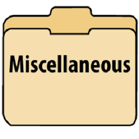

Python is a high-level, easy-to-learn programming language.
It has an astoundingly large community filled with wonderful tips and advice.
This page aims to share some of these tips and tricks with you.
This page is home to tips and tricks using the web design quartet: HTML, CSS, JavaScript,
and PHP. Whether it's your job or your hobby, web design should be fun and easy, and this page aims to help
make it just that.

And here, the page where everything good, but not exactly matching in subject, comes together.
This page is home to tips and tricks from all kinds of technology. Please enjoy!